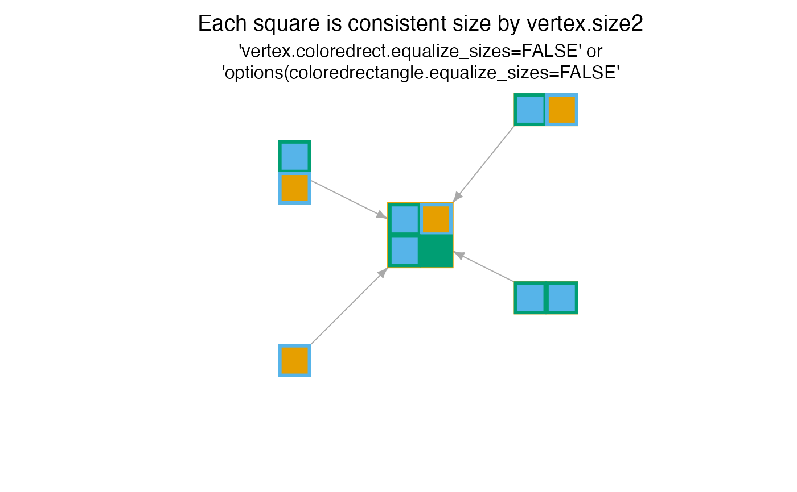

custom igraph vertex shape coloredrectangle
Source:R/jamenrich-igraphshapes.R
shape.coloredrectangle.plot.Rdcustom igraph vertex shape coloredrectangle
shape.coloredrectangle.plot(coords, v = NULL, params)
shape.coloredrectangle.clip(coords, el, params, end = c("both", "from", "to"))Arguments
- coords
two-column numeric matrix with x- and y-coordinates, respectively.
- v
optional ids of the vertices to plot. It should match the number of rows in the
coordsargument.- params
a function object that can be called to query vertex/edge/plot graphical parameters. The first argument of the function is
'vertex','edge'or'plot'to decide the type of the parameter, the second is a character string giving the name of the parameter.
Value
the plot function returns an invisible list of
data.frame objects which were used to draw the rectangle objects.
However the purpose of this function is the by-product that it
draws rectangles onto an igraph graph.
The clip function returns coordinates corresponding to the outer
node edge based upon argument end:
end="both"returns 4 columns, the x,y 'edge from' and x,y 'edge to' coordinates, respectivelyend="from"returns 2 columns, the x,y 'edge from' coordinatesend="to"returns 2 columns, the x,y 'edge to' coordinates
Details
This function defines the plotting function for custom igraph vertex shape coloredrectangle. The coloredrectangle shape is described as:
Each vertex is drawn as a rectangle, filled with squares which are each individually colored.
The squares are arrayed into a number of columns and rows, which are defined for each vertex using
coloredrect.ncolandcoloredrect.nrow, respectively.The vector of colors is arrayed as values of a matrix, therefore
coloredrect.byrowis logical to indicate whether colors should fill the matrix by row, similar to howbyrow=TRUEis used.The colors for each vertex are defined by
coloredrect.color, which is alistofcharactercolor vectors. Whencoloredrect.colordoes not exist, values frompie.colorwill be used if they exist.Any missing colors are displayed as
NAwhich applies no color. For example, when a vertex has 3 columns, 2 rows, and only 5 colors, the colors are not recycled. Instead, the last color isNAto render no color in that position.Each square may also have an optional border, defined by
coloredrect.border,coloredrect.lwd, andcoloredrect.lty. These borders are drawn as inner borders so they do not overlap optional frame border.Each node may have a frame border, defined by
frame.color,frame.lwd, andframe.lty. The frame border is drawn as an outer border so it does not overlap inner borders, adding some height and width to the final node. The frame border is drawn before the node squares are drawn.The size of each square inside the rectangle is defined by
size2, such that the rectangle width iscoloredrect.ncol * size2and the rectangle height iscoloredrect.nrow * size2.Node sizes may be adjusted by enabling
equalize_sizesin one of two ways:options(coloredrectangle.equalize_sizes=TRUE)(priority); orvertex.coloredrect.equalize_sizes=TRUE, which is equivalent toigraph::V(g)$coloredrect.equalize_sizes=TRUE. in the latter case, only the first value is recognized.
The behavior of
equalize_sizesis described below:equalize_sizes=FALSE(default), nodes are exactlysize2multiples ofcoloredrect.ncolandcoloredrect.nrow.equalize_sizes=TRUEor1, the shortest side of each node is scaled tosize2. This option is useful to ensure nodes are never smaller thansize2width or height, but can be larger.equalize_sizes=2, the longest side of each node is scaled tosize2. This option is useful to ensure nodes fit insides a square withsize2sides.
Nodes are drawn using vectorized processes where possible. However, the primary function
graphics::symbols()only permits vectorized plotting for onelwd/ltycombination at a time, so rendering is split into unique combinations oflwd/lty. Vectorized rendering is substantially faster than iterative rendering, and the majority of circumstances uses only onelwd/ltycombination for all nodes. Line width is not an optimal way to convey a quantitative measurement, however it can be useful to highlight particular nodes of interest.When
coloredrect.ncoldoes not exist, thencolwill be defined by allowing up to two rows by default, enough to accommodate the number of colors incoloredrect.color.When
coloredrect.ncol * coloredrect.nrowwill not fit all colors incoloredrect.color, thecoloredrect.ncolwill be extended to create enough positions to display all colors.When
coloredrect.nrowdoes not exist, it will use a value based uponcoloredrect.ncoland the length ofcoloredrect.color.
The values coloredrect.color and other variables described above refer to
igraph vertex attributes, and can be accessed for a given igraph
object g as follows:
igraph::V(g)$coloredrect.colorigraph::vertex_attr(g, "coloredrect.color")or during plotting the value can be defined using the syntax
igraph::plot(g, vertex.coloredrect.color=list(...))
Note that blank positions inside coloredrectangle nodes can be removed
via removeIgraphBlanks(), which also has the effect of modifying the
coloredrect.ncol and coloredrect.nrow, by applying the appropriate
logic.
Todo: The clip function should adjust the node boundary to account
for frame.color and frame.lwd when present, since the frame is
drawn as an outer border and slightly increases the size of the node.
See also
Other jam igraph shapes:
jam_mypie(),
shape.ellipse.clip(),
shape.ellipse.plot(),
shape.jampie.plot()
Other jam igraph shapes:
jam_mypie(),
shape.ellipse.clip(),
shape.ellipse.plot(),
shape.jampie.plot()
Examples
# prepare example igraph object
am <- matrix(ncol=5, nrow=5,
data=0,
dimnames=list(LETTERS[1:5], LETTERS[1:5]))
am[2:5, 1] <- 1;
g1 <- igraph::graph_from_adjacency_matrix(am)
igraph::graph_attr(g1, "layout") <- cbind(x=c(0, 1, 1, -1, -1),
y=c(0, 1, -0.5, 0.5, -1))
colorset <- c("firebrick3", "gold", "deepskyblue",
"mediumpurple3", "orchid1")
colorset <- c("firebrick3", "dodgerblue3");
vseq <- seq_len(igraph::vcount(g1));
vsizes <- c(3, 2, 2, 2, 1);
set.seed(1);
igraph::V(g1)$coloredrect.border <- lapply(vseq, function(i){
sample(colorset,
replace=TRUE,
size=vsizes[i])
})
igraph::V(g1)$coloredrect.color <- lapply(vseq, function(i){
jamba::alpha2col(alpha=0.5,
igraph::V(g1)$coloredrect.border[[i]])
})
igraph::V(g1)$coloredrect.ncol <- c(2, 2, 2, 1, 1);
igraph::V(g1)$coloredrect.nrow <- c(2, 1, 1, 2, 1);
igraph::V(g1)$coloredrect.lwd <- rep(3, igraph::vcount(g1))
igraph::V(g1)$frame.lwd <- c(2, 1, 1, 1, 1);
igraph::V(g1)$frame.color <- "black"
igraph::V(g1)$size2 <- 10;
igraph::V(g1)$shape <- "coloredrectangle";
plot(g1, vertex.label="")
#> Warning: longer object length is not a multiple of shorter object length
#> Warning: longer object length is not a multiple of shorter object length
title(font.main=1, line=1.5, main=paste0(
"Each square is consistent size by vertex.size2\n"))
title(font.main=1, cex.main=1, line=0.5, main=paste0(
"'vertex.coloredrect.equalize_sizes=FALSE' or\n",
"'options(coloredrectangle.equalize_sizes=FALSE'"))

# equalize shortest side to size2
plot(g1, vertex.label="", vertex.coloredrect.equalize_sizes=TRUE)
#> Warning: longer object length is not a multiple of shorter object length
#> Warning: longer object length is not a multiple of shorter object length
title(font.main=1, line=1.5, main=paste0(
"The shortest side is fixed by vertex.size2\n"))
title(font.main=1, cex.main=1, line=0.5, main=paste0(
"'vertex.coloredrect.equalize_sizes=TRUE' or\n",
"'options(coloredrectangle.equalize_sizes=TRUE'"))
 # equalize longest side to size2
plot(g1, vertex.label="", vertex.coloredrect.equalize_sizes=2)
#> Warning: longer object length is not a multiple of shorter object length
#> Warning: longer object length is not a multiple of shorter object length
title(font.main=1, line=1.5, main=paste0(
"The longest side is fixed by vertex.size2\n"))
title(font.main=1, cex.main=1, line=0.5, main=paste0(
"'vertex.coloredrect.equalize_sizes=2' or\n",
"'options(coloredrectangle.equalize_sizes=2'"))
# equalize longest side to size2
plot(g1, vertex.label="", vertex.coloredrect.equalize_sizes=2)
#> Warning: longer object length is not a multiple of shorter object length
#> Warning: longer object length is not a multiple of shorter object length
title(font.main=1, line=1.5, main=paste0(
"The longest side is fixed by vertex.size2\n"))
title(font.main=1, cex.main=1, line=0.5, main=paste0(
"'vertex.coloredrect.equalize_sizes=2' or\n",
"'options(coloredrectangle.equalize_sizes=2'"))